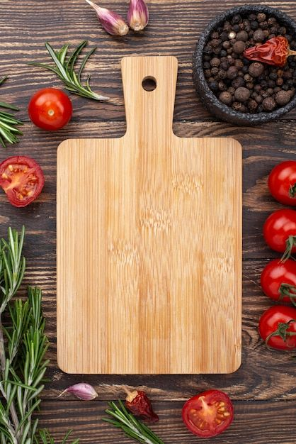

Q'RICO




Ingredientes: Arroz, pollo, conejo, judías verdes, garrofón, tomate, aceite de oliva, agua, azafrán, sal.
Preparación: Sofríe el pollo y el conejo en aceite de oliva. Añade las verduras y sofríe. Incorpora el arroz, el azafrán y el agua. Cocina a fuego lento hasta que el arroz esté en su punto.

Ingredientes: Carne de cerdo, achiote, piña, cebolla, cilantro, tortillas de maíz.
Preparación: Marina la carne en achiote y especias. Asa la carne y la piña. Sirve en tortillas con cebolla y cilantro.

Ingredientes: Arroz para sushi, alga nori, pescado crudo, pepino, aguacate, salsa de soja.
Preparación: Cocina el arroz y déjalo enfriar. Coloca el alga nori en una esterilla, extiende el arroz, añade el pescado y las verduras. Enrolla y corta.

Ingredientes: Masa de pizza, salsa de tomate, mozzarella, albahaca fresca, aceite de oliva.
Preparación: Extiende la masa, añade la salsa de tomate, la mozzarella y la albahaca. Hornea hasta que la masa esté dorada y el queso derretido.

Ingredientes: Pescado blanco, limón, cebolla morada, cilantro, ají, sal, pimienta.
Preparación: Corta el pescado en cubos, marina en jugo de limón. Añade la cebolla, el cilantro, el ají, la sal y la pimienta. Refrigera antes de servir.

Ingredientes: Berenjenas, carne de cordero, tomate, cebolla, ajo, bechamel, queso.
Preparación: Sofríe la carne con tomate y cebolla. Cocina las berenjenas en rodajas. En una fuente, alterna capas de berenjena y carne. Cubre con bechamel y queso. Hornea hasta dorar.